Everything an organizer can do, in the order of a normal week. Players need none of this; the page explains itself to them.
1. Getting started
The page is one address for everyone: koraykayir.github.io/volleyball/. Players see the list and join; organizers see the same page plus an Organizer panel at the bottom.
Becoming an organizer
Log in with the Google account that is on the organizer list (the admins collection in the Firebase console: one document per organizer, the document ID is the Google email in lowercase).
The first time, the page asks for your name and level like for any player, because organizers also play.
From then on the status line says Gürkan · organizer and the Organizer panel appears below the list.
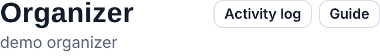
Top of the Organizer panel: Activity log and this guide.
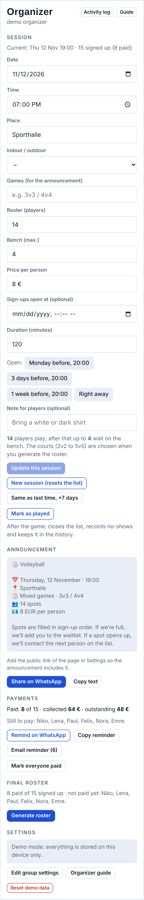
The panel, top to bottom: Session, Announcement, Payments, Final roster, Settings.
Several organizers can exist; any of them can do everything described here. The page updates live for everyone, so two organizers can work at the same time.
2. The weekly routine
Start the session. In the Organizer panel, fill in the session (or tap "Same as last time, +7 days") and tap "Start the session". After a game, "Start next week's session" does it in one tap.
Announce it. Share the announcement on WhatsApp (text with the sign-up link, plus the QR image if you like).
Let people sign up. If you set an opening time, the page shows a countdown and opens by itself. Nothing to do.
During the week: confirm leave requests when they come in (more than 3 hours before the start), tick payments, add people by hand if needed.
Before the game: generate the roster (choose the courts, generate, adjust, save) and share it. Everyone sees the saved roster on the page.
After the game: "Mark as played", tick no-shows, and start next week's session.
3. Sessions
A session is one game day. There is always one current session (the list everyone sees); older ones live in Previous sessions.
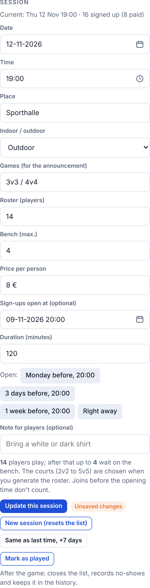
The session form in the Organizer panel.
Field
What it does
Date, Time
When the game starts. The time matters for the 3-hour leave rule and the calendar links.
Place
Shown in the band, the announcement and the calendar entry.
Indoor / outdoor, Games
Only used in the announcement ("📍 Sporthalle · Outdoor", "🏐 Mixed games · 3v3 / 4v4"). Leave Games empty and the announcement uses the saved roster's courts, or a sensible default for the roster count.
Roster (players)
How many play. The first that many on the list play; must be an even number (teams of equal size).
Bench (max.)
How many may wait on the bench. Once roster + bench are taken, nobody else can join. Leave it empty for no limit.
Price per person
Shown to players on their card ("Pay 8 € to Gürkan") and in the announcement.
Sign-ups open at
Optional. Before that moment the page shows a countdown and refuses joins, enforced by the server, so a changed phone clock does not help anyone. The presets under the field set it to Monday before / 3 days before / 1 week before at 20:00, or clear it.
Duration
For the calendar entry.
Note for players
Free text, shown in the announcement and the calendar entry.
Update vs new session
Update this session changes the current session in place (list stays). The button is only active when something changed; an odd roster count is flagged and blocked.
New session (resets the list) moves the current list to Previous sessions (with who played, who paid, no-shows and the saved teams) and starts a fresh empty list. "Same as last time, +7 days" fills the form from the last session first.
Changing the roster count mid-week is fine: the list re-numbers by itself. If you lower it below the number of people already signed up, the extra people move to the bench in joining order.
4. Announcement, link and QR
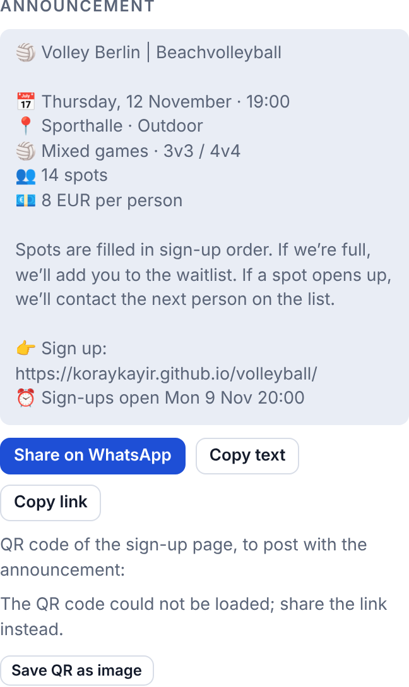
The announcement text is built from the session and your settings.
Share on WhatsApp opens WhatsApp with the text; Copy text and Copy link put it on the clipboard.
The first line is the group name from Settings (for example "Volley Berlin | Beachvolleyball"). The link line needs the page link in Settings.
If an opening time is set and still ahead, the text ends with "⏰ Sign-ups open …".
The QR code under the text points to the page; "Save QR as image" downloads it so you can post it as a picture next to the text (WhatsApp cannot carry a picture inside a text message).
5. The list
The list is strictly first come, first served, in the order the server received each sign-up (the time with seconds next to every name). The first roster count people play; everyone after that is on the bench and moves up automatically when someone ahead leaves.
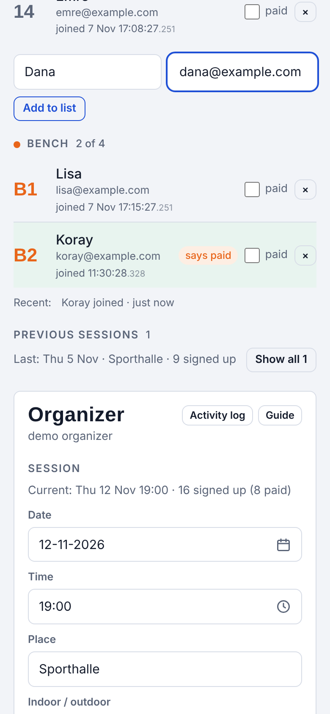
Organizer view: emails, paid boxes, remove buttons, Copy list, and the row to add someone by hand.
What only organizers see
Emails (from the player's account, or the one you typed when adding someone).
The paid box per person and says paid when a player ticked "I've paid" themselves.
× to remove someone (asks once; the toast offers Undo for ten seconds).
Copy list: the list as numbered text for WhatsApp.
Adding someone by hand
Type a name (and optionally an email) under the list and tap "Add to list". The person lands at the end of the queue, like a normal sign-up at that moment. Names on the list are unique, so a second "Ana" is refused. People added by hand do not have an account; they cannot leave by themselves, you remove them.
Who moves up
When someone leaves or is removed, the first person on the bench takes a playing spot and the whole list re-numbers in joining order. The toast and the activity log tell you who moved up. Someone who leaves and joins again goes to the back of the queue.
6. Leave requests
Players can take themselves off the list, but the rules depend on the time:
More than 3 hours before the start: leaving is a request. The person keeps the spot until an organizer decides, so nobody moves up prematurely.
In the last 3 hours, and after the start: leaving is immediate; the next person moves up at once.
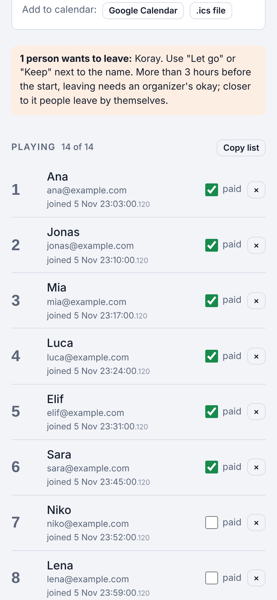
A pending request: notice above the list, "Let go" / "Keep on the list" under the name.
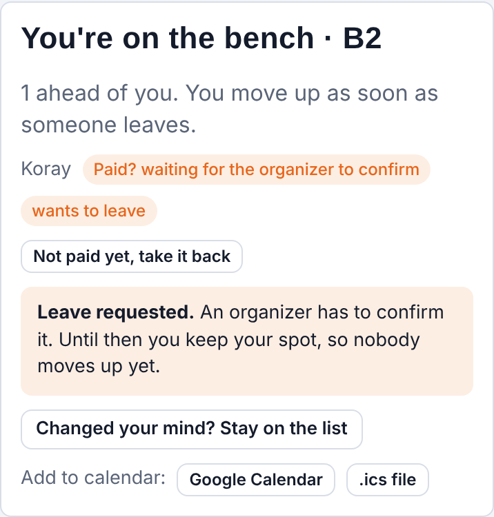
What the player sees while waiting (they can take it back).
Let go: the person is off the list, the bench moves up, both of you get a notice.
Keep on the list: the request is declined; the player sees "An organizer kept you on the list. Talk to them if you really can't make it."
Organizers get a toast the moment someone asks, if the page is open. The activity log keeps every request and decision.
Organizers themselves always leave immediately, no request needed.
7. Payments
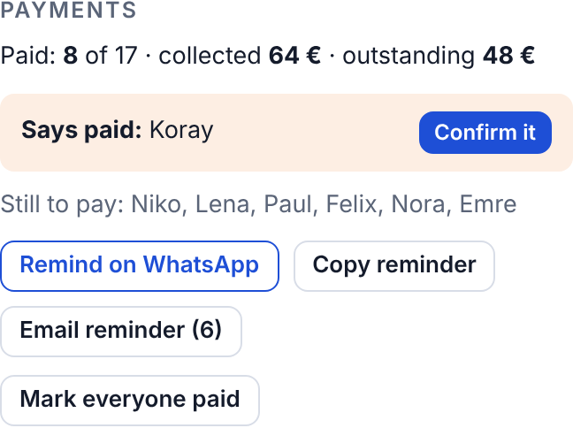
Payments: totals, "Says paid" with one-tap confirmation, reminders.
Tick paid next to a name in the list, or Mark everyone paid in Payments.
Players can tick "I've paid" on their own card after transferring. That does not count as paid yet: you see says paid next to the name and a "Says paid: …" banner in Payments with Confirm. Confirming sets paid.
Remind on WhatsApp / Copy reminder / Email reminder address the people who still owe. Email only works for people with an email on file.
The totals (collected / outstanding) use the price from the session.
Payment information is organizer-only. Players see their own state ("Pay 8 € to Gürkan", "Paid? waiting for the organizer to confirm", "Paid") and nothing about others.
8. Roster and teams
The roster is made from players who have paid, in list order, up to the roster count. Unpaid people in the playing group show up as "not in the roster" so you notice.
Courts. Tap "Generate roster" and say how many courts of each kind (2v2 = 4 players, 3v3 = 6, 4v4 = 8, 5v5 = 10). The total has to be exactly the roster count, otherwise "Generate teams" stays disabled and the message says how far off you are. The page suggests a split for you.
Generate. Teams appear in the editor. "Regenerate" gives another variant; "Change courts" goes back to step 1.
Adjust. Tap a player, then another to swap them, or tap "Move here" on a team; "Remove from roster" sends a player back to the pool; tap a pool player and then "Move here" to place them.
Preview and save. "Preview" shows the roster as it will be shared; "Save teams" stores it with the session, and everyone sees it on the page under "Final roster". Exporting also saves.
Share. WhatsApp, Copy as text, PDF, HTML file, or Email to players.
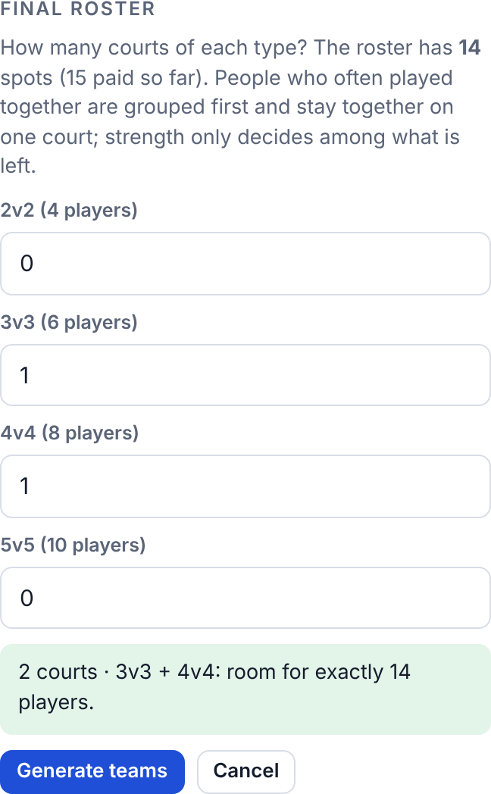
Step 1: the courts have to hold exactly the roster count.
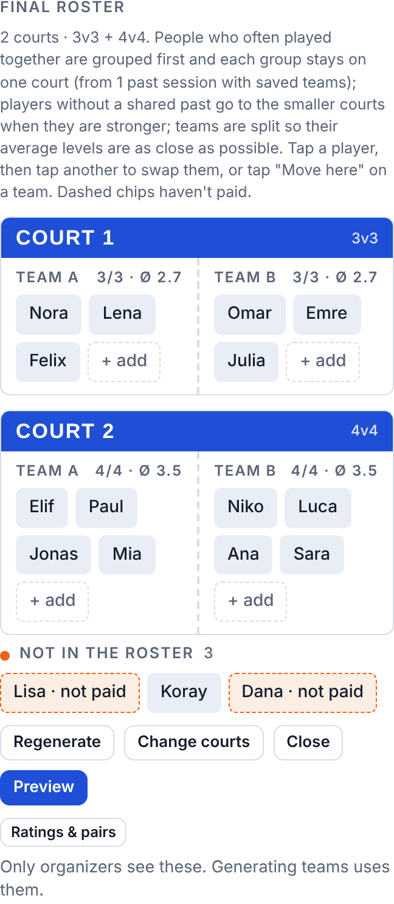
Step 2: the editor. Dashed chips haven't paid.
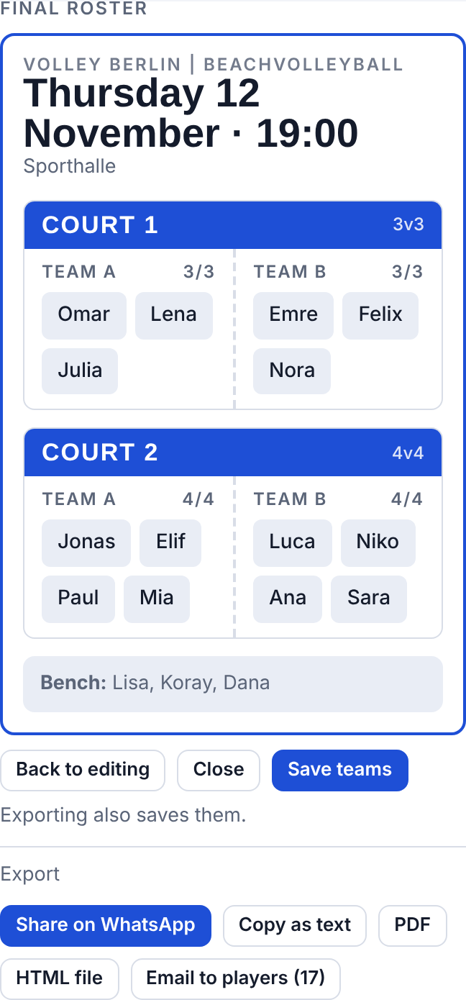
Preview, save, export.
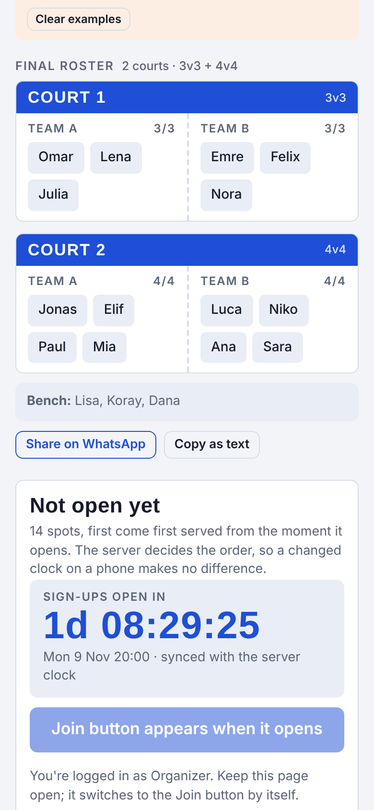
The saved roster as everyone sees it.
How the teams are made
Groups first. Players are split into court-sized groups so that people who shared a court in past sessions (saved teams) are together as much as possible.
Each group stays on one court. Strength (average level) only breaks ties: among courts of the same size the stronger group gets the lower court number, and players without a shared past are placed on the smaller courts when they are stronger. Without any shared past at all, courts of different sizes are simply filled by level, strongest on the smallest court.
Balanced teams. Each court is split into two teams with the closest average level. Keep-together pairs share a team; keep-apart pairs never do, when possible.
Ratings & pairs
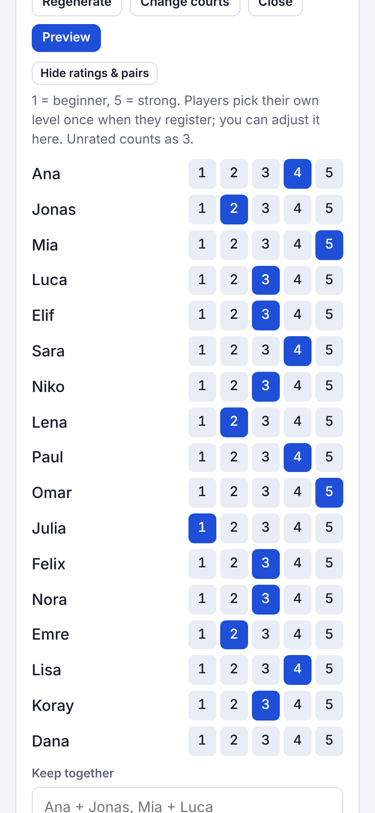
Ratings & pairs, inside the editor.
Players pick their level (1 = beginner … 5 = strong) once when they register. Here you can adjust it; for players with an account that changes their level for good, for people added by hand it is a rating kept for the roster.
Keep together ("Ana + Jonas, Mia + Luca") and Keep apart ("Tom / Niko") are remembered across sessions. Names must match the list.
Teams of past sessions
In Previous sessions, every session shows its stored teams; "Edit teams" (or "Set teams" when none are stored) opens the same editor for that session. Stored teams are what the "played together" grouping learns from, so it pays to save them every week.
9. After the game
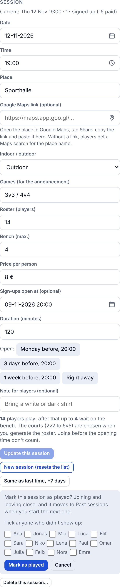
Mark as played: tick anyone who didn't show up.
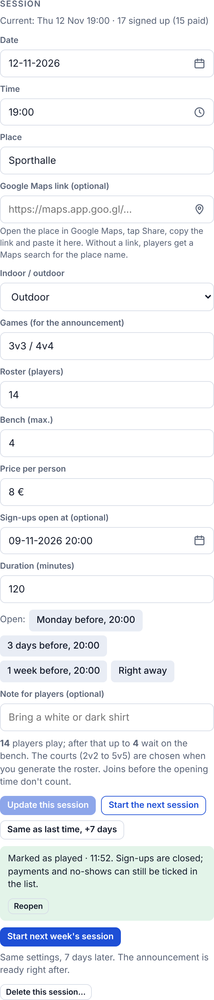
Afterwards: reopen if needed, or start next week's session in one tap.
Mark as played closes joining and leaving, records no-shows (you can still tick paid and no-show in the list afterwards) and saves the teams if a draft was open.
Reopen undoes that if you tapped too early.
Start next week's session copies date + 7 days, time, place, roster and bench counts, price, note and opening time (+7 days), creates the session and has the announcement ready.
10. History and attendance
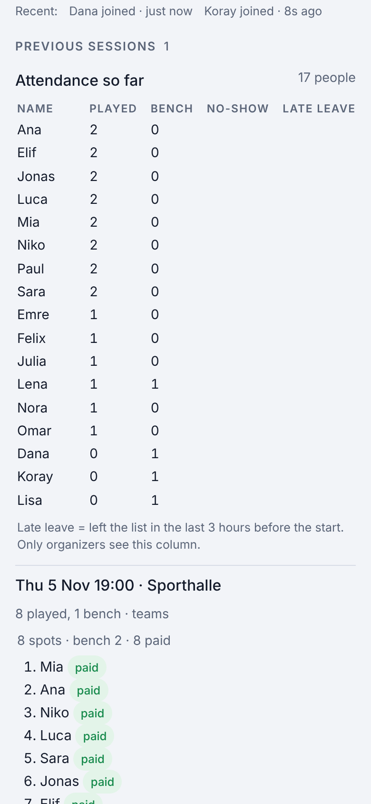
Previous sessions with the attendance table (organizer view includes the Late leave column).
Each past session lists who played (with paid and no-show marks for organizers), who was on the bench, and the stored teams.
Attendance so far counts played / bench / no-show per person across all past sessions. Organizers also see Late leave: how often someone left the list in the last 3 hours before a start.
Players see their own numbers on their account page ("Your record").
11. Activity log
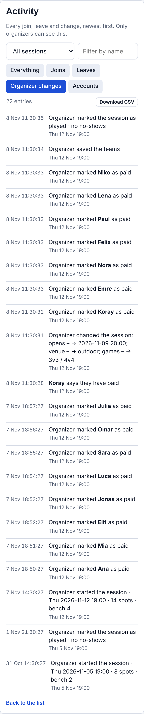
The activity log, filtered to organizer changes.
Every join, rejoin, leave, leave request and decision, "I've paid" note, registration, rename, account deletion, and every organizer action (add, remove, undo, paid, no-show, session created or changed with a diff, marked as played, teams saved, level and rating changes) is written together with the change itself, so the log can't miss anything.
Filter by session, by kind (Joins, Leaves, Organizer changes, Accounts) and by name; newest first; the latest 400 entries.
Download CSV exports what is currently filtered.
Only organizers can open the log.
12. Accounts and levels
Players register once with Google or with email and password ("Create an account" next to "Log in" at the top, or the link under the Join button), pick the name shown on the list and their level. Names are unique in the group; the page asks for a last name or initial when a name is taken.
One account can be on a session's list once. People can change their name and password on their account page; the list follows a rename immediately.
Levels are set once by the player; afterwards only organizers change them (Ratings & pairs in the roster editor).
"Forgot password? Reset it by email" is on the login page; the mail comes from Firebase.
Players can delete their account themselves (account page). Past sessions keep the name in the history.
Organizers are not managed on the page: add or remove the Google email in the admins collection in the Firebase console.
13. Settings
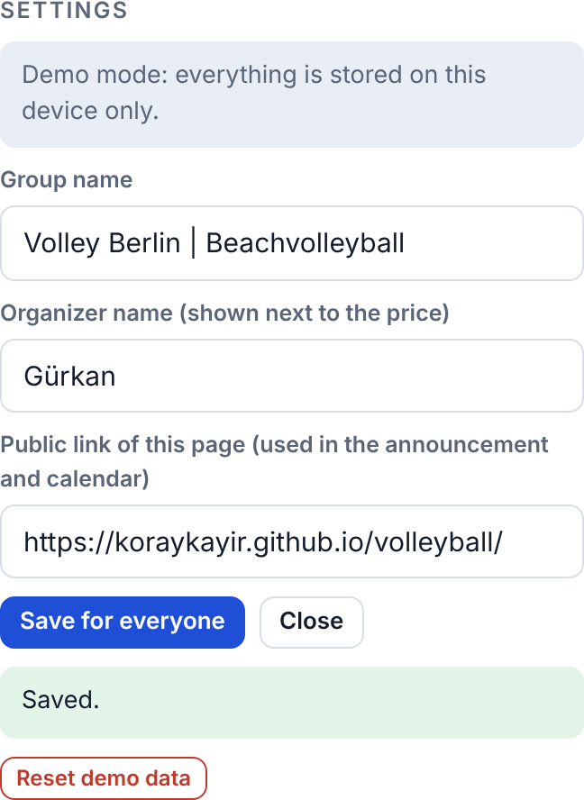
Group settings, saved for everyone.
Group name: the band title and the first line of the announcement ("Volley Berlin | Beachvolleyball").
Organizer name: shown next to the price on players' cards ("Pay 8 € to Gürkan").
Public link of this page: used in the announcement, the QR code, the calendar entries and "Copy list".
14. What players see and do
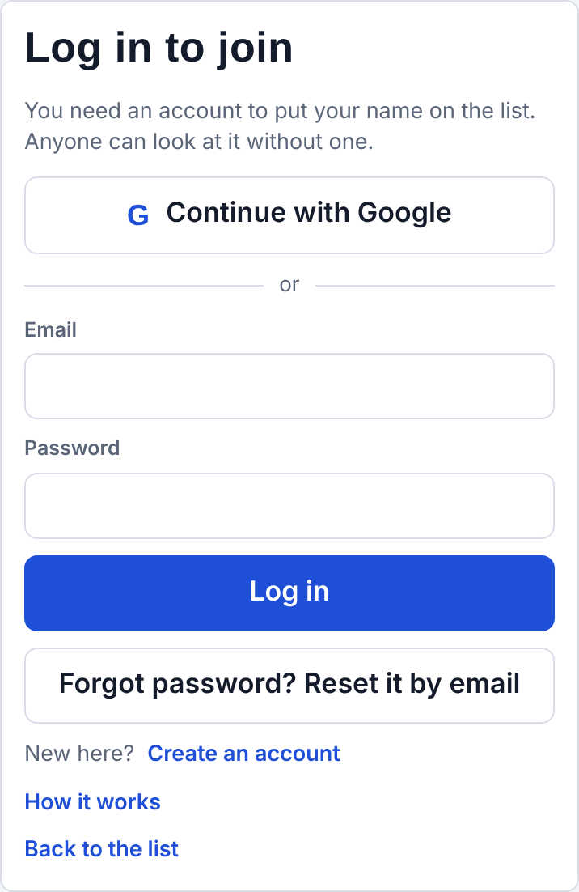
Login with Google or email; "How it works" explains the rules.
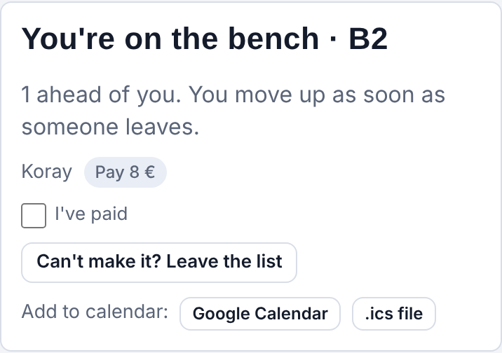
After joining: position, payment state, "I've paid", leave, calendar.
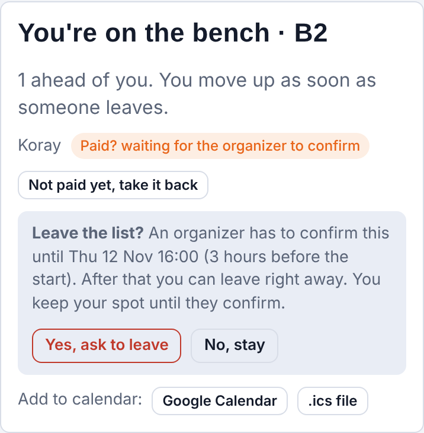
Leaving asks for confirmation and explains the 3-hour rule.
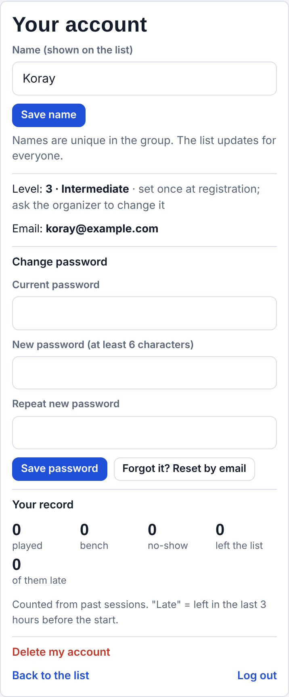
Account page: name, password, own record, delete account.
Anyone can look at the list without an account; joining needs a login.
Players see name, position and registration time for everyone, plus "wants to leave" markers and no-shows after a game. They do not see emails or who has paid.
The page tells them what happens to them: joined, moved up from the bench, marked paid, let go, kept, removed, list full, sign-ups open (with a short buzz on phones). The browser tab shows their position.
Calendar links (Google Calendar, .ics) are on their card.
15. Rules in short
Who
Can
Anyone
See the list, the final roster, previous sessions and attendance (without payment info).
Logged-in player
Join the current session once (when it is open and not full), ask to leave or leave in the 3-hour window, take a request back, rejoin at the back, tick "I've paid", change own name and password, see own record, delete own account.
Organizer
Everything above, plus: sessions, announcement, add and remove people, undo, decide leave requests, paid and no-show marks, levels and ratings, roster and teams, mark as played, history teams, activity log, settings.
These limits are enforced by the server (Firebase security rules), not only by the page. Times are stamped by the server, so the order of the list and the opening time cannot be gamed with a device clock.
16. Troubleshooting
You see
What it means
"Firebase refused this change. Are you signed in as an organizer?"
Your account is not on the organizer list, or the security rules in the Firebase console are older than the page. Re-publish the rules from the repository (firestore.rules).
"You're offline" banner
No connection. The list may be stale; your taps are sent once you are back. Refresh if it stays.
The status line shows an older version than the newest release
The page updates itself once when a new version is served; otherwise reload. In rare cases GitHub's deployment takes 10 to 20 minutes.
Someone cannot join
Check in this order: not logged in · sign-ups not open yet (countdown) · the list is full including the bench · the name is already on the list (added by hand) · the session is marked as played.
"That name is already taken"
Names are unique in the group. Ask them to add a last name or initial.
Countdown looks off on a phone
Logged-out visitors see the countdown in device time; after logging in it is corrected to server time. Joining is checked by the server either way.
"Generate teams" stays disabled
The courts do not add up to the roster count. Add or remove courts, or change the roster count in the session (must be even).
The QR code says it could not be loaded
The small QR library could not be fetched (blocked network). The link still works; try again later.
17. Demo page
A copy of the page with example data runs at …/volleyball/demo/. Everything there stays on your device, the organizer tools open without a login ("Organizer (demo)"), and "Reset demo data" in Settings starts over. Good for trying things before doing them on the live page.
/demo/#countdown makes the demo session open 3 minutes from now, to see the countdown and the opening moment.
/demo/#soon moves the demo session's start to 2 hours from now, to try an immediate leave.